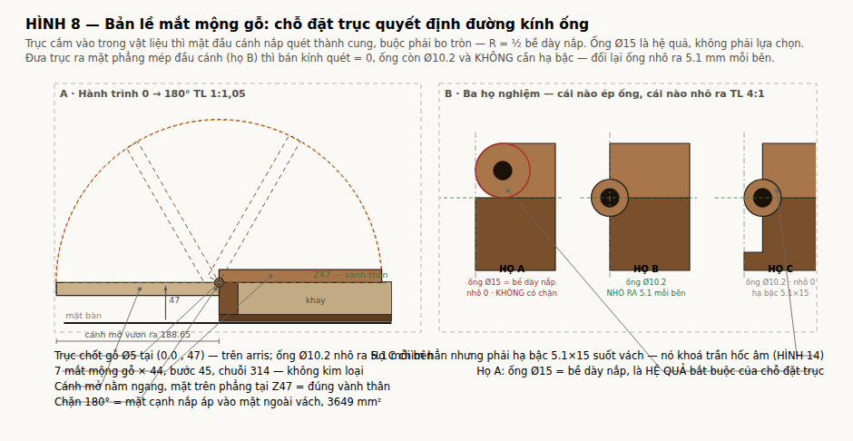
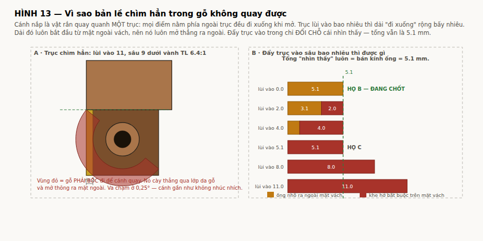

build/dong-hoc-ban-le.pdf. Hình: figs/fig8-dong-hoc-ban-le. Tính toán: tools/hinge_kinematics.py. Mọi con số trong tài liệu này do script sinh ra. Chạy lại để đối chiếu.Bản lề làm bằng mắt mộng gỗ, không dùng kim loại. Đây là quyết định đã chốt từ đầu và không nằm trong phạm vi thương lượng của tài liệu này. (Kim loại chỉ được chấp nhận cho khóa nắp — xem docs/KHOA-NAP.md.)
Cái duy nhất còn là biến là chỗ đặt trục — và chính chỗ đó ép đường kính ống gỗ, chứ không phải ngược lại.
Câu đó đúng, nhưng chỉ đúng bên trong một giả thiết chưa hề được đặt câu hỏi: rằng trục nằm ở giữa bề dày nắp. Ràng buộc hình học thật sự chỉ có một — trong cả hành trình 0–180°, vật liệu cánh nắp không được cắt vào vật liệu thân hộp. Vị trí trục là biến, không phải dữ kiện.
Hệ quả của giả thiết đó: muốn ống mảnh hơn thì chỉ còn cách làm nắp mỏng hơn. Đó là lý do bản trước phải đi Ø18 (nắp 18) → Ø15 (nắp 15) — và vẫn còn to.
hinge_kinematics.py §1 không lập luận bằng lời. Nó bo tròn đầu cánh nắp thành mũi tròn bán kính R quanh trục, quét cánh 0→180° từng nửa độ, và tìm R nhỏ nhất còn quay lọt:
| đặt trục ở | toạ độ | R mũi phải bo |
|---|---|---|
| giữa bề dày nắp (bản gốc) | (7,5 , 54,5) | 7,52 mm |
| lùi vào 4 mm từ mặt ngoài | (4,0 , 54,5) | 7,53 mm |
| lùi vào 2 mm từ mặt ngoài | (2,0 , 54,5) | 7,55 mm |
| trên mặt ngoài, giữa bề dày nắp | (0,0 , 54,5) | 0,00 mm |
| trên mặt ngoài, ở arris | (0,0 , 47,0) | 0,00 mm |
R tụt về 0 đúng khi px = 0, tức khi trục nằm trên mặt phẳng ngoài của thân. Lý do hình học: mặt đầu cánh nắp chính là mặt phẳng x = 0; trục nằm trên nó thì cả mặt đầu là một tia xuất phát từ trục, quay bao nhiêu cũng chỉ trượt trên chính nó, không bao giờ đâm vào thân.
Trục lùi vào trong bao nhiêu thì mặt đầu quét thành cung, và phải bo tròn đúng bấy nhiêu. Ở giữa bề dày nắp: R = 7,5 = 15/2 = nửa bề dày nắp. Không phải trùng hợp — mũi tròn buộc phải tiếp tuyến cả mặt trên lẫn mặt dưới nắp, mà hai mặt đó cách nhau đúng bề dày nắp.
| HỌ A · trục trong nắp | HỌ B · trục trên arris | HỌ C · trục lùi vào R | |
|---|---|---|---|
| Trục xoay | (7.5 , 54.5) | (0.0 , 47) | (5.1 , 47) |
| Đường kính ống gỗ | Ø15.0 | Ø10.2 | Ø10.2 |
| Ống bị ép bởi | bề dày nắp | chốt + thành gỗ | chốt + thành gỗ |
| Nhô ra ngoài mỗi bên | 0.0 mm | 5.1 mm | 0.0 mm |
| Hạ bậc vành | không | không | 5.1 × 15 |
| Mép ngoài nắp lùi vào | 0.0 | 0.0 | 5.1 |
| Phủ bì X | 378.0 | 388.2 | 378.0 |
| Thành gỗ quanh lỗ chốt | 4.90 mm | 2.50 mm | 2.50 mm |
| Chặn 180° | phải PHAY | tự nhiên | tự nhiên |
| Diện tích chặn | — | 3649 mm² | 3649 mm² |
| Cánh mở, mặt trên ở | Z62 | Z47 | Z47 |
| So với vành thân | cao hơn vành 15 | bằng vành | bằng vành |
| Cánh mở vươn ra | 180.8 | 188.2 | 183.2 |
| Bo mép trần hốc âm cho phép | — | ≤ R11,0 | ≤ R4,3 |
| Khối lượng (khay lõi ổn định) | 6.41 kg | 6.45 kg | 6.37 kg |
Đã chọn: HỌ B (Rev C3). Đổi B.HG_MODE trong tools/box_spec.py rồi chạy lại là ra họ kia — mọi trị số khác tự suy lại theo.
Rev C2 chọn họ C vì nó lấy phủ bì nhỏ nhất của họ A và mặt chặn tự nhiên của họ B: trục vẫn nằm trên mặt phẳng của mép đầu cánh nắp — chỉ là mặt phẳng đó lùi vào đúng R — nên R mũi vẫn bằng 0, còn ống thì tiếp tuyến mặt ngoài vách từ bên trong, tức chìm hẳn. Về mặt bản lề thì đó vẫn là nghiệm đẹp nhất.
Cái giá của nó là hạ bậc vành ngoài trên: R sâu × bề dày nắp cao, chạy suốt 350 mm. Và vách bản lề lại chính là chỗ đặt hốc âm hai tay. Hạ bậc vì thế làm ba việc, cả ba đều xấu:
Bỏ hạ bậc là bỏ cả ba. Giá phải trả: ống gỗ nhô ra 5.1 mm mỗi bên, phủ bì X 378.0 → 388.2.
Để trả bớt giá đó, ống được hạ từ Ø12.2 (chốt Ø6 + thành 3,0) xuống Ø10.2 (chốt Ø5 + thành 2.5) — đúng cái đòn bẩy mà mục Đòn bẩy thật sự còn lại bên dưới đã chỉ ra. Dải nhìn thấy bớt 2.0 mm.
Hệ quả của họ B — không có gì phải phay thêm: mép ngoài cánh nắp trùng mặt ngoài vách (lùi vào 0.0), vách không hạ bậc. Thứ duy nhất khoét vào đầu vách là hõm cho mắt mộng NẮP: một phần tư đĩa R5.1 ở góc trên-ngoài, và chỉ tại băng Y của mộng nắp, không chạy suốt.

Đề xuất: đẩy trục sâu vào trong vách, để lại một lớp da gỗ phủ ngoài, thì nhìn từ ngoài sẽ không thấy bản lề. Tính toán: tools/hinge_concealed.py.
Kết quả: không quay được. Va chạm ở 0,25° — cánh gần như không nhúc nhích.
| trục lùi vào | sâu dưới vành | da gỗ còn | chạm ở góc |
|---|---|---|---|
| 8,1 | 6,1 | 2,0 | 0,25° |
| 11,0 | 9,0 | 4,9 | 0,25° |
| 13,0 | 11,0 | 6,9 | 0,25° |
Điểm phạm lỗi luôn là một điểm trên mặt dưới của nắp, nằm phía ngoài trục.
Lý do gốc. Cánh nắp là vật rắn quay quanh một trục. Vận tốc của một điểm cách trục (dx, dz) là (−dz, dx); điểm nằm phía ngoài trục (dx < 0) có vận tốc z âm, tức đi xuống. Cả dải mặt dưới nắp từ x = 0 đến x = trục đều nằm ngoài trục, nên cả dải đó cày xuống dưới vành ngay từ độ đầu tiên:
| điểm mặt dưới | thụt sâu nhất tới |
|---|---|
| x = 0,0 | Z23,8 |
| x = 5,0 | Z27,2 |
| x = 10,9 | Z29,0 |
Vách phải được khoét rỗng toàn bộ dải đó — mà dải đó bắt đầu từ x = 0, tức nó mở thẳng ra mặt ngoài. Lớp da gỗ bị cày thủng ngay.
Đây không phải hai bài toán mà là một: đẩy trục vào trong bao nhiêu thì ống bớt nhô ra bấy nhiêu và khe hở rộng ra đúng bấy nhiêu.
| trục lùi vào | ống nhô ra | khe hở mặt ngoài | tổng nhìn thấy | |
|---|---|---|---|---|
| 0,0 | 6,1 | 0,0 | 6,1 | họ B — vách và nắp phẳng liệt |
| 2,0 | 4,1 | 2,0 | 6,1 | |
| 4,0 | 2,1 | 4,0 | 6,1 | |
| 6,1 | 0,0 | 6,1 | 6,1 | họ C — đang dùng |
| 8,0 | 0,0 | 8,0 | 8,0 | khe rộng hơn cả ống — tệ hơn |
| 11,0 | 0,0 | 11,0 | 11,0 | tệ hơn nữa |
Cột "tổng nhìn thấy" không bao giờ nhỏ hơn bán kính ống. Đẩy trục vào chỉ đổi chỗ cái nhìn thấy từ "nhô ra" sang "khe hở". Cấu hình đang chốt (trục lùi vào đúng R) đã là tối ưu của vế "không nhô ra".

Vì tổng nhìn thấy = R, muốn thấy ít hơn thì chỉ còn cách làm ống nhỏ lại. R = (chốt + khe)/2 + thành gỗ.
| chốt | thành gỗ | ống gỗ | cắt chốt | xé dọc | rủi ro khoan lỗ sâu 160 |
|---|---|---|---|---|---|
| Ø6 | 3,0 | Ø12,2 | 344× | 864× | an toàn |
| Ø5 | 3,0 | Ø11,2 | 239× | 864× | an toàn |
| Ø5 | 2,5 | Ø10,2 | 239× | 720× | chấp nhận được |
| Ø4 | 2,5 | Ø9,2 | 153× | 720× | chấp nhận được |
| Ø4 | 2,0 | Ø8,2 | 153× | 576× | NGUY — mũi khoan trôi sẽ nứt ra ngoài |
Độ bền không phải ràng buộc ở bất kỳ dòng nào — hệ số hàng trăm lần. Ràng buộc là khoan: lỗ sâu 160 mm xuyên 7 mắt mộng xen kẽ trên cocobolo nhiều dầu, mũi khoan trôi 0,1–0,2 mm là bình thường.
Đặc tính kiểm phải làm TRƯỚC khi chốt: khoan thử và đo độ trôi. Nếu ≤ 0,10 mm thì hạ được xuống chốt Ø5 + thành 2,5 → ống Ø10,2, dải nhìn thấy bớt 2,0 mm.
| Điểm | Đóng X | Đóng Z | Mở 180° X | Mở 180° Z |
|---|---|---|---|---|
| mép bản lề, mặt dưới | 6,1 | 47,0 | 6,1 | 47,0 |
| mép bản lề, mặt trên | 6,1 | 62,0 | 6,1 | 32,0 |
| mép khe giữa, mặt dưới | 188,2 | 47,0 | −176,1 | 47,0 |
| mép khe giữa, mặt trên | 188,2 | 62,0 | −176,1 | 32,0 |
Cánh mở nằm ngang, mặt trên phẳng tại Z47 — đúng cao độ vành thân, vươn ra 182,15 mm. Mặt đó chính là lòng lõm ôm tấm Nu khi đóng, tức khay bỏ bài sâu 5,0 mm.
Ở 180°, mặt cạnh bản lề của nắp áp đúng vào mặt ngoài vách — cả hai đều là mặt phẳng x = 0.0 và cả hai đều đi qua trục. Vì đi qua trục nên chúng chỉ chạm nhau đúng ở 180°, không cọ nhau trong hành trình.
| trường hợp tải | M (N·m) | F (N) | MPa | hệ số |
|---|---|---|---|---|
| chỉ trọng lượng cánh | 0,70 | 106 | 0,029 | 483× |
| + 2 kg quân bỏ trên khay | 2,54 | 386 | 0,106 | 132× |
| + người chơi tỳ 5 kg ở mép ngoài | 9,93 | 1 505 | 0,412 | 34× |
Họ A phải phay một mặt chặn phẳng nằm trong lòng mắt mộng, hệ số 10×. Họ B chặn bằng cả mặt cạnh nắp áp vào cả mặt vách, không gia công gì thêm.
Quét 1° một bước, 9 điểm biên trên cánh. Không va chạm ở bất kỳ góc nào. Điểm thấp nhất Z = 32,0 (= vành thân trừ bề dày nắp — đúng vị trí cánh mở).
| Kiểu | mắt mộng gỗ liền khối với thân và với nắp — không một chi tiết kim loại |
| Số mắt mộng | 7 mỗi cánh: 4 thuộc THÂN, 3 thuộc NẮP (lẻ nên hai đầu thuộc thân) |
| Kích thước | dài 44, bước 45, khe dọc trục 1,0, chuỗi 314 |
| Đặt theo Y | 18,0 … 332,0 trên cánh dài 350 |
| Ống gỗ | Ø10.2 quanh trục (0.0 , 47) |
| Chốt | gỗ cocobolo thẳng thớ Ø6 × 160, 2 chốt mỗi cánh, gặp nhau ở mắt mộng giữa |
| Lỗ chốt | Ø6,20 (+0,20 khe) |
| Thành gỗ quanh lỗ | 3,00 mm |
Tải: trọng lượng một cánh 0,65 kg = 6,4 N chia cho 3 mắt mộng NẮP → 2,1 N mỗi mắt. (Mô men khi mở 180° do mặt chặn nhận, không phải chốt.)
| kiểm | ứng suất | cho phép | hệ số |
|---|---|---|---|
| cắt chốt gỗ (2 mặt cắt) | 0,038 MPa | 13 MPa | 344× |
| ép mặt lỗ chốt | 0,008 MPa | 14 MPa | 1 727× |
| xé dọc thành gỗ quanh lỗ | 0,008 MPa | 7 MPa | 864× |
Độ bền không phải ràng buộc — hệ số hàng trăm đến hàng nghìn lần. Cái quyết định 3,0 mm thành gỗ là chế tạo: phải khoan một lỗ Ø6,20 sâu 160 mm xuyên 7 mắt mộng xen kẽ, trên gỗ nhiều dầu. Mũi khoan trôi 0,1–0,2 mm trên 160 là bình thường; thành 3,0 mm nuốt được độ trôi đó mà không nứt ra ngoài. Dưới 2,5 mm thì không.
Đặc tính kiểm: khoan bằng khoan cần hoặc khoan từng mắt mộng rồi ráp thử; sai lệch đồng trục giữa hai đầu ≤ 0,15 mm. Chạy thử 500 chu kỳ mở–đóng.
Cánh mở là dầm console dài 176 mm, ngàm dọc mặt chặn 180°. Người chơi tỳ 5 kg ở mép ngoài, tải trải đều trên 100 mm bề rộng:
Đặc tính kiểm: võng đầu cánh mở ≤ 1,5 mm dưới tải 5 kg tại mép ngoài.
| Vật liệu bản lề | MỘNG GỖ liền khối — không một chi tiết kim loại nào |
| Họ nghiệm | B — trục trên arris, không hạ bậc |
| Trục xoay | X = 0.0 · Z = 47.0 |
| Suy ra từ | R mũi = 0 chỉ khi trục nằm trên mặt phẳng mép đầu cánh |
| Ống gỗ | Ø10.2 — định bởi chốt Ø5 + thành gỗ 2.5, KHÔNG bởi bề dày nắp |
| Nhô ra ngoài | 5.1 mm mỗi bên → phủ bì X 388.2 |
| Hạ bậc vành | không có |
| Hõm cho mắt mộng NẮP | 1/4 đĩa R5.1 ở góc trên-ngoài, chỉ tại băng của mộng nắp |
| Mép ngoài nắp lùi vào | 0.0 mm |
| Mắt mộng | 7 × 44, bước 45, chuỗi 314, đặt giữa cánh |
| Chốt | gỗ Ø5 × 160, 2 chốt mỗi cánh |
| Thành gỗ quanh lỗ chốt | 2.5 mm — có điều kiện: đo độ trôi mũi khoan ≤ 0,10 mm |
| Chặn 180° | mặt cạnh nắp áp vào mặt ngoài vách — tự nhiên, 3649 mm² |
| Góc mở | 180° +0/−1° |
| Vị trí cánh khi mở | nằm ngang, mặt trên Z47 (= vành thân), vươn ra 188 |
| Bề dày nắp | 15 đều, không vát — bề dày nắp KHÔNG còn định ống gỗ |
| Phủ bì | 388.2 × 350 × 62 |
| Khối lượng | 6.45 kg (khay lõi ổn định) / 7.08 kg (khay cocobolo) |
docs/DONG-HOC-BAN-LE.md bang tools/md2html.py. Moi tri so sinh tu tools/box_spec.py.